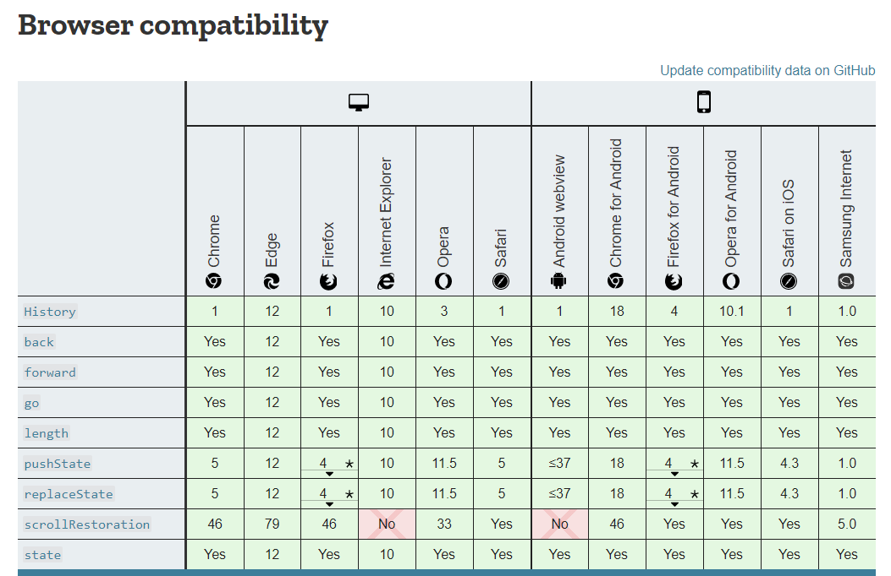

History API
and
Routing
History API
and
Routing
The History API
The History API lets you interact with the browser history, trigger the browser navigation methods and change the address bar content.
The History API was introduced in HTML5 and is now supported by all modern browsers.
Access the History API
The History API is available on the object, so you can call it like this: window.history or history, since window is the global object.
Navigate the history
Go back to the previous page:
history.back()
You can forward to the next page using
history.forward()
go(n) lets you navigate back or forward multiple levels deep. For example
history.go(-1) //equivalent to history.back()
history.go(1) //equivalent to history.forward()
To know how many entries there are in the history, you can call
history.length
Add an entry to the history
Using pushState() you can create a new history entry programmatically.
const state = { name: 'Flavio' }
history.pushState(state, '', '/user')
Modify history entries
While pushState() lets you add a new state to the history, replaceState() allows you to edit the current history state.
history.pushState({}, '', '/posts')
const state = { post: 'first' }
history.pushState(state, '', '/post/first')
const state = { post: 'second' }
history.replaceState(state, '', '/post/second')
Access the current history entry state
Accessing the property
history.state
returns the current state object (the first parameter passed to pushState or replaceState).
The onpopstate event
This event is called on window every time the active history state changes, with the current state as the callback parameter:
window.onpopstate = event => { console.log(event.state) }
will log the new state object (the first parameter passed to pushState or replaceState) every time you call history.back(), history.forward() or history.go().
Routing
Router is one of the must-have parts of single page application.
Router knows how to tweak the content of the address bar and notifies the rest of the system for URL changes.
Methods of routing
Hash-based routing
What we meant by hash-based routing is using the anchor part of the URL to simulate different content. For example http://mysite.com/#/products/list leads to displaying a list of products.
The routing is possible because changes in the hash don’t trigger page reload.
Reading the route
To read the anchor bit from the URL we may use the following code
var hash = window.location.hash;
// or extracting the hash from the entire URL
var hash = window.location.href.split('#')[1] || '';
Changing the path
The following helper will update the URL without firing a new request
var navigate = function (path) { var current = window.location.href; window.location.href = current.replace(/#(.*)$/, '') + '#' + path; } navigate('rs-school');
A routing revolution with pushState
Now we do not need to use a #. We use a pushState() method to manipulate the history of the browser.
var stateObj = { foo: "bar" };
history.pushState(stateObj, "page 2", "bar.html");
To use this method for routing we need to make redirect from each route to index.html in our server.
As a summary I would like to say that with HTML 5 history API our application to look & act like proper, server-rendered sites as much as possible, especially with minimal effort.